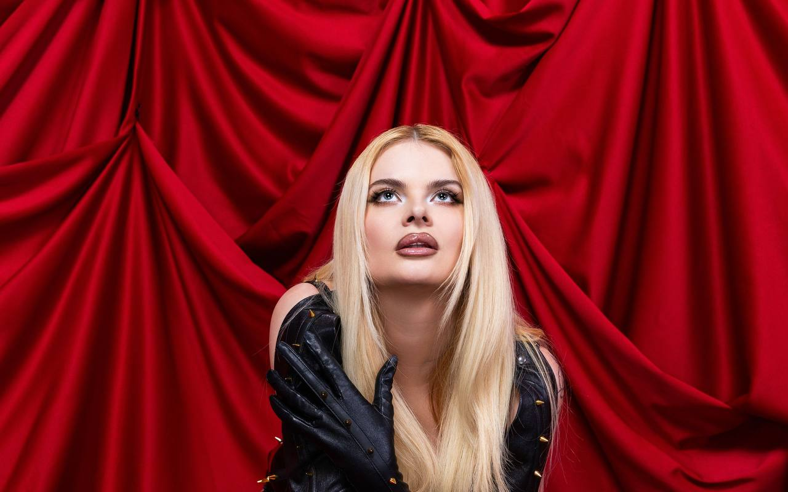
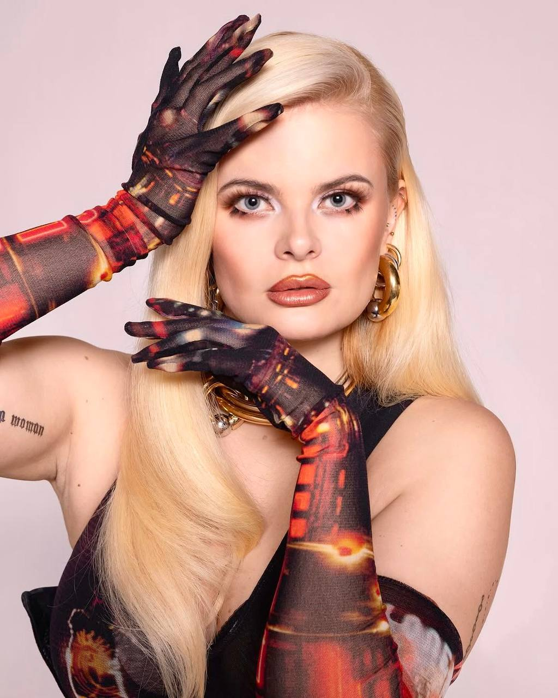
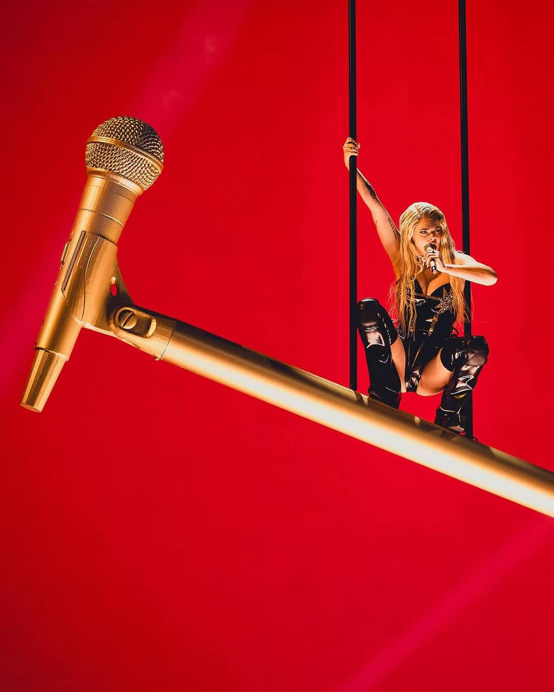
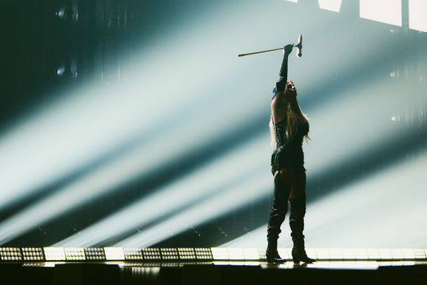
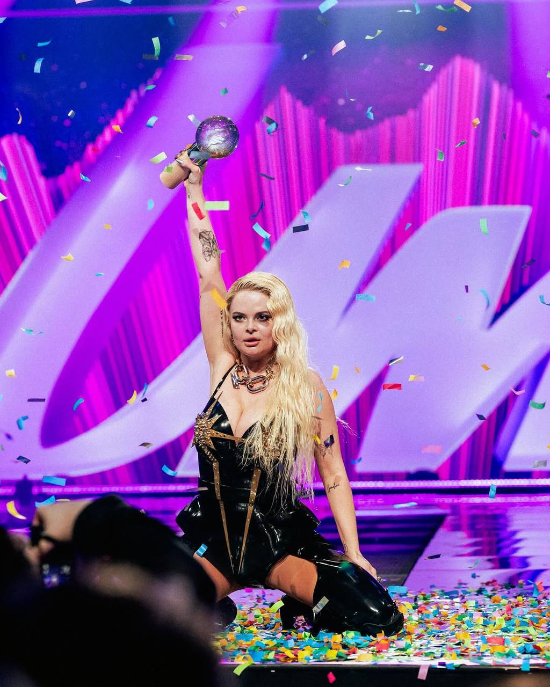
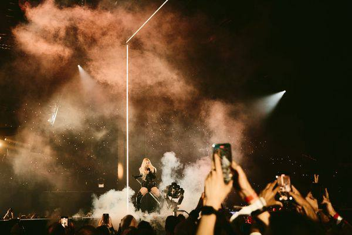
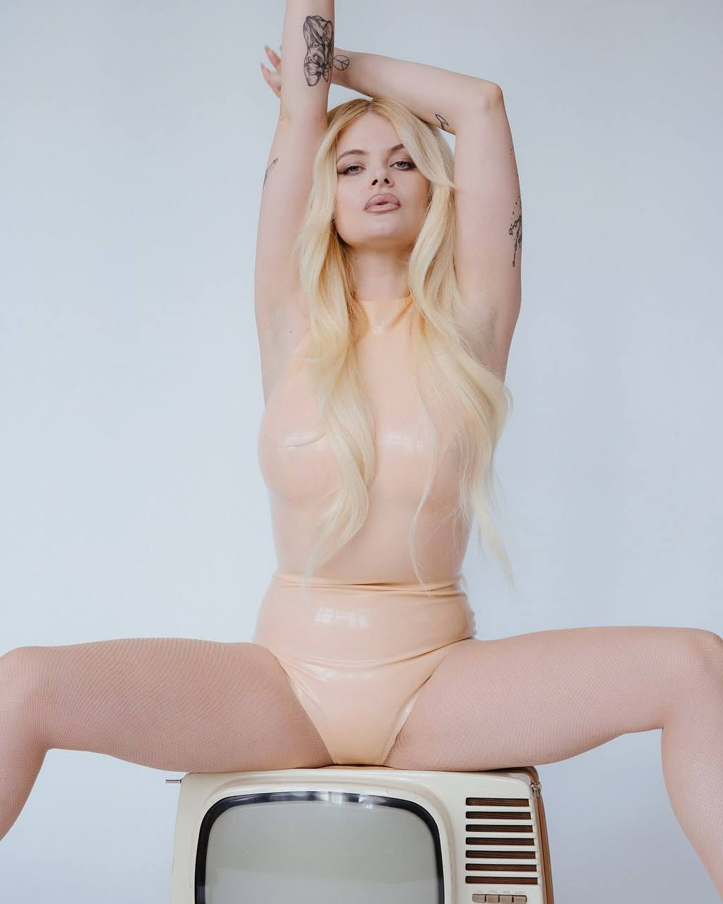
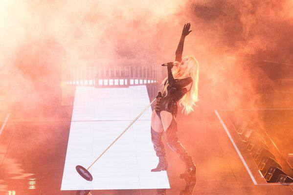

ERIKA
VIKMAN
Tango Queen turned pop provocateur — the singer who rode a flaming golden microphone into the Eurovision final and made the whole arena look up.

#1
Finland Albums
Chart, 2021
Chart, 2021
Who is she
From Pori's
From Pori's
tango halls to Basel.
Born in Tampere in 1993, Erika Vikman spent a decade earning her stripes on Finland's tango and iskelmä circuit before detonating the pop charts with "Cicciolina" — and she hasn't slowed down since.
- 2016 Crowned Tango Queen of Finland at Tangomarkkinat
- 2020 "Cicciolina" and "Syntisten pöytä" turn her into a chart regular
- 2025 Wins UMK and represents Finland at Eurovision with "Ich Komme"
Eurovision 2025 · Basel
The golden microphone moment.
"Ich Komme" carried Erika 11th in the Grand Final on 196 points — but it's the staging that made history: hoisted skyward on a giant golden microphone stand, spitting fireworks over a sea of phone lights. The Eurovision Awards named her Style Icon 2025.
The Eurovision story →Ich
Komme
Finland's Eurovision 2025 entry, written and produced by Christel and Jori Roosberg. Press play — nothing loads from Spotify until you do.
Discography
Full discography →
The hits, so far.
From tango-pop confessionals to Eurovision electro-bangers — a run of singles that keeps getting louder.
On stage
All tour dates →
Catch her live.
Finnish festival summer now, Helsinki in September — and Ich Komme Europe Spring 2027, her first headline tour: Hamburg, Berlin, Utrecht, Cologne, London, Glasgow, Manchester.
The archive
Backstage & on stage.







Never miss a show
Get tour alerts.
The March 2027 European headline shows are her first — follow her where you already listen and the dates find you.